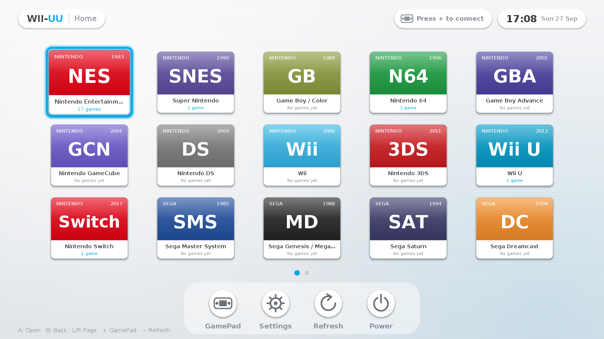
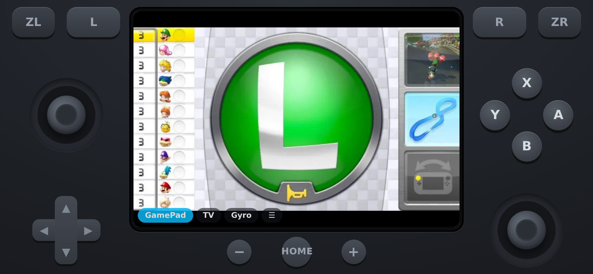
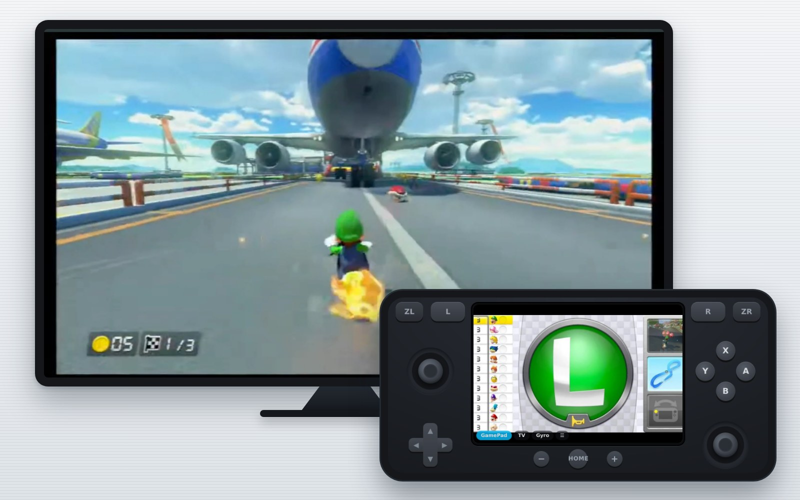
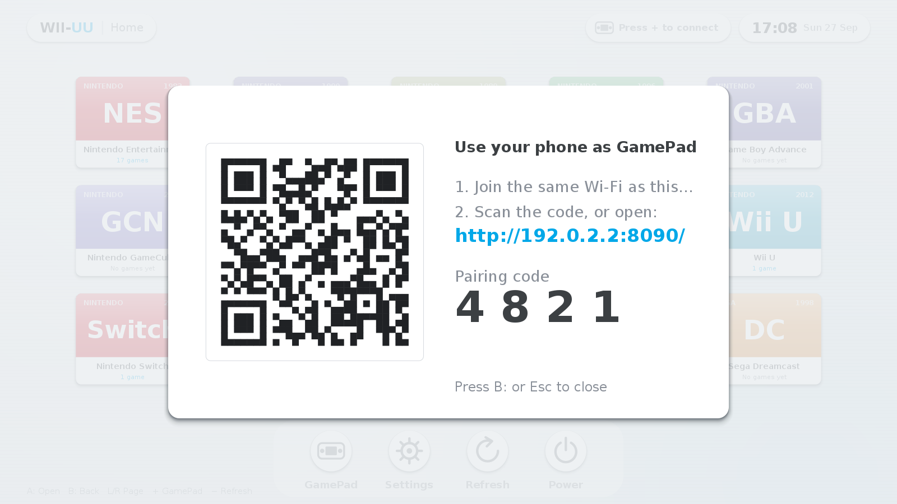

Your games, the Wii U way.
WII-UU is an emulator launcher styled after the Wii U Menu. It finds your games, starts the right emulator, and turns any phone into the GamePad. It supports consoles from the NES to the Wii U and Switch, and from the PS1 to the PS4.

20 consoles, one menu
Drop games into a folder per system and they show up as tiles. Covers are optional; PS3 and PS4 icons are picked up automatically.
What it does
A small Java app with no extra dependencies, drawn by hand to feel like the Wii U Menu.
Wii U style menu
A start-up animation, paged tiles with a gliding cursor, a dock, soft menu sounds, relaxed background music, and a dark mode that follows your system. It runs smoothly on a Raspberry Pi.
Phone as GamePad
Scan a QR code and your phone becomes the controller, with sticks, D-pad, ABXY, shoulder buttons, HOME, a live touch screen, gyro and sound. Up to 4 players.
Emulators installed for you
It downloads official releases for your CPU, or builds the latest source when a project has no build for it. Emulators are set up automatically.
One-button launch
Press A and the matching emulator opens your game. Press HOME on the phone to close it and return to the menu.
Fully configurable
Set the ROM folders, emulator commands and GamePad key mapping in a settings screen, or in a plain properties file.
Runs where you do
Linux, Windows and macOS, on x86-64 or 64-bit ARM. Installers set up shortcuts, ROM folders and the firewall.

The GamePad is your phone
WII-UU has a built-in web server, so there's no app to install. The phone's screen works like the Wii U GamePad's.
- Press + (or F2) on the TV to show the QR code.
- Scan it with your phone on the same Wi-Fi. The pairing code is filled in for you.
- Browse your library on the phone and tap a game to start it on the TV.
- Press HOME during a game to close it and return to the menu.
A real second screen
As on a real Wii U, the phone's screen shows a live picture from the PC, and you can touch it.

Wii U GamePad
Cemu's separate GamePad view appears on your phone. Tapping it works as the GamePad's touchscreen, and the phone's gyro works as its motion sensor.
DS & 3DS touch screen
The bottom screen of melonDS or Azahar moves to your phone. Draw, tap and swipe right on it while the top screen stays on the TV.
Off-TV play
Mirror the whole TV to the phone, including the WII-UU menu, and tap tiles to open them.
Sound on the phone
Tap Sound and the game's audio plays on the phone too, about a tenth of a second behind the picture. Plug in headphones and play anywhere in the house.
Low delay
The phone fetches one frame at a time, so frames never pile up on the network, and it always shows the newest picture. On macOS, Apple's ScreenCaptureKit does the capture on the GPU.
Gyro
Tilt the phone to steer or aim. Motion reaches Cemu, Dolphin, Azahar and Ryujinx as a DSU (cemuhook) controller.
Pair in seconds
The QR code on the TV includes a pairing code, so only phones that can see your screen can connect.

Install
You need Java 17 or newer, and the installers offer to set it up. Your ROMs and settings are kept if you uninstall.
# WII-UU only
curl -fsSL https://wiiuu.stoppedwumm.net/get.sh | bash
# WII-UU plus emulators for your CPU (x86-64 or Raspberry Pi 4/5)
curl -fsSL https://wiiuu.stoppedwumm.net/get.sh | bash -s -- --with-emulatorsOr download the zip, unzip it and run ./install.sh. Then start WII-UU from the app menu or with wiiuu.
On a Pi, use the 64-bit Raspberry Pi OS.
Download the zip, unzip it and double-click install.bat. It installs Java with winget if needed, adds Start-menu and Desktop shortcuts, and opens the GamePad port in the firewall when run as administrator.
Then set each emulator's path under Settings (F1).
curl -fsSL https://wiiuu.stoppedwumm.net/get.sh | bashThis installs WII-UU.app in ~/Applications and offers Apple's Command Line Tools, which WII-UU uses to build its screen and sound helpers.
Install emulators from their websites and set their paths under Settings (F1).
Start WII-UU from ~/Applications, then turn on WII-UU under System Settings → Privacy & Security in Screen Recording (picture and sound) and Accessibility (buttons).
Settings (F1) → General → macOS permissions opens both pages. Restart WII-UU afterwards. Sound needs macOS 13 or newer.
Emulators
wiiuu-emulators installs emulators on Linux. It uses the newest official release for your CPU when one exists and builds the latest source otherwise.
Heavy source builds are opt-in with --all.
wiiuu-emulators --list # what's available / installed on this machine
wiiuu-emulators # install everything that fits this machine
wiiuu-emulators --update # update; skips what's already newest
wiiuu-emulators --only ppsspp,duckstation
wiiuu-emulators --nightly # allow pre-release builds
wiiuu-emulators --source # build everything from source| System | Emulator | How it's installed |
|---|---|---|
| NES | FCEUX | release or source |
| SNES | Snes9x | release or source |
| Game Boy / Color / Advance | mGBA | release or source |
| Nintendo 64 | Mupen64Plus | source |
| Nintendo DS | melonDS | release or source |
| GameCube / Wii | Dolphin | source (heavy) |
| Nintendo 3DS | Azahar | release or source |
| Wii U | Cemu | release or source |
| Switch | Ryujinx | release or source |
| Master System / Genesis / Saturn | Mednafen | source |
| Dreamcast | Flycast | release or source |
| PlayStation | DuckStation (or Mednafen) | release or source |
| PlayStation 2 | PCSX2 | release x86-64 only |
| PSP | PPSSPP | release or source |
| PlayStation 3 | RPCS3 | release or source |
| PlayStation 4 | shadPS4 | release x86-64 only |
FAQ
Does it emulate the consoles itself?
No. WII-UU is the menu and the GamePad. It launches well-known emulators for each system and points them at your games.
My phone can't connect.
Phone and computer must be on the same network, and the GamePad port (8080 by default) must be allowed through the firewall. The installer prints the command for ufw and firewalld, and Windows asks on first start.
How do I get the Wii U GamePad screen on my phone?
In Cemu, turn on View → Separate GamePad view. When a Wii U game starts, the phone switches to that window automatically. Tap TV or GamePad on the phone to switch.
How do I use gyro / motion controls?
Tap Gyro on the phone and open the secure address it offers (accept the certificate once). In the emulator, add the DSU / cemuhook controller at 127.0.0.1 port 26760.
How do I update WII-UU?
Open Settings (F1) → General → Check for updates, or run wiiuu --upgrade. WII-UU also tells you when a new version is out. Settings, ROMs, paired phones and emulators are kept.
The GamePad screen is choppy.
On Linux and Windows, install ffmpeg on the PC (the installers offer it). It captures and encodes the picture at 30 fps, even on a Raspberry Pi.
On macOS, install the Command Line Tools (xcode-select --install), so WII-UU can build its ScreenCaptureKit helper. The terminal then says GamePad streaming via ScreenCaptureKit.
The GamePad screen lags behind the TV.
Update to 1.1.6 or newer, which fetches frames one by one so delay can't build up. What remains comes from Wi-Fi: use 5 GHz Wi-Fi or a cable for the PC, and try stream.fps=60 in the settings file.
How do I get sound on the phone?
Tap Sound on the phone. The PC records what it plays: on macOS 13+ through ScreenCaptureKit, on Linux through PulseAudio/PipeWire (pulseaudio-utils), and on Windows through ffmpeg and Stereo Mix.
Phones only play sound after a tap, so after reloading the page, tap anywhere once. With the iPhone's silent switch on, iOS 17 or newer is needed. If the PC can't record, the phone says why.
Do I have to pair my phone again after a restart?
No. Phones stay paired and keep their player number, and they reconnect by themselves when WII-UU starts again.
Buttons don't reach the emulator.
On Linux, let the installer enable virtual controllers, and the phone then shows up as an Xbox 360 pad in every emulator. On macOS and Windows, player 1 gets each emulator's own default keys (Dolphin, PPSSPP, mGBA, melonDS, DuckStation, Ryujinx, Azahar). For other emulators, set the emulator's keyboard controls to the keys listed under Settings → GamePad Keys. On Linux under Wayland, keys reach X11/XWayland windows. On macOS, allow WII-UU under Accessibility. Dolphin gets a temporary mapping that matches the phone.
Will a Raspberry Pi run everything?
The older consoles run well on a Pi 4/5. GameCube, Wii U, Switch, PS3 and PS4 are too demanding to play well on a Pi, and PS2 and PS4 emulators only run on x86-64.
The GamePad screen is black on my Mac.
macOS blocks screen capture until you allow it. Start WII-UU from ~/Applications/WII-UU.app, then turn on WII-UU under System Settings → Privacy & Security → Screen Recording and Accessibility (Settings F1 → General → macOS permissions opens both), and restart WII-UU.
Where does the menu music come from?
It's an original jazzy loop written for WII-UU and synthesized when the app starts, so no audio files ship and nothing is copied from a console. It fades out while a game runs. Turn it or the start-up animation off under Settings (F1) → General.
Where are my settings?
In ~/.wiiuu/config.properties. Games go in ~/WiiUU/roms/<system> by default; you can change this in Settings.